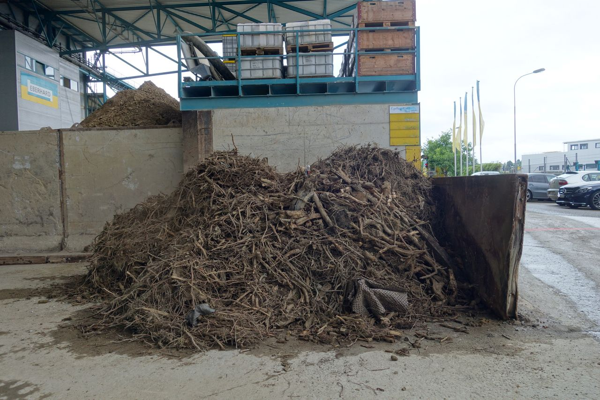
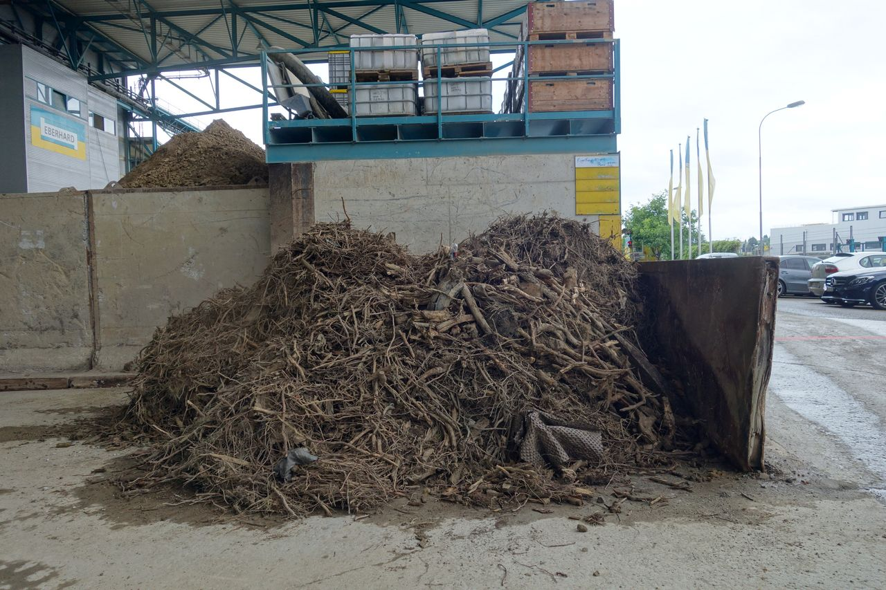

smartphone
object biography
Times of Waste

Demolition


 

Soil decontamination plant Eberhard AG Rümlang, Schweiz: Cleaning of demolition waste and contaminated soil.
The way of gravel
In the last ice age, about 20,000 years ago, masses of gravel formed in the Alps. Soil erosion on largely undeveloped soils was intense and numerous rocks slid down the slopes into streams below. Many small stones lay in the stream bed and were rounded off into small pebbles in the fast running water over years of minute effort. The trail of two such pebbles is tracked here through a variety of roundabout and temporary uses in the Swiss context.
The pebbles were initially carried away by gigantic floods into the Aare. There they lay for a few decades. In the next giant flood, one of the pebbles was washed in to the Rhine knee, where it was deposited together with billions of other pebbles on a gravel bank in the broadly flowing Rhine.
There the pebble lay until the construction of the harbour and docking station on the Klybeck Quay in 1924-25. Back then, it was conveyed by digger during the port construction work on to the then Klybeck Island: the island was heaped up and the arm of the Rhine between the island and the mainland filled in. Now oil storage tanks and the tracks of the port railway could be built on the former island.
The other pebble was also deposited in the Rhine, but because of its heavier weight was only carried up to a gravel bank south of Grenzach-Whylen, and so became part of a large gravel terrace on the Rhine. In the 20th-century, this gravel terrace was the perfect site for a gravel pit: Holcim AG, the largest concrete manufacturer in Switzerland, mined billions of pebbles there, transporting them by conveyor belt onto a Rhine barge and shipping them to the nearest concrete plant. The gravel was poured into concrete, and the concrete used to build a Migrol oil tank on Klybeck Island. The paths of the two pebbles, which were formed in the Alps from a single piece of rock, thus ran separately, before both became situated on Klybeck Island.
Due to the planned interim use of Klybeck Island, a solution had to be found for the dismantling of the disused oil tanks and decontamination of the oil-contaminated gravel base. Capacity in landfills is reducing, moreover landfill land is expensive. In addition, precious building material for future generations is in these materials. Because the pebbles are small whole stones, inside they are completely clean.
The city of Basel had the old concrete reduced in a concrete crusher and processed into new concrete. The ground which had been contaminated with oil is transported to the decontamination plant in Rümlang / ZH, where the oil is washed from the pebbles. The gravel is then transported to the nearby concrete plant, where it is used for the construction of new buildings.
Soundscape to the soil decontamination plant ESAR of the Eberhard AG Rümlang, Switzerland (2:47).
Soil decontamination plant Rümlang
Soil can be washed without it becoming sludge (apart from the very fine particles). The polluted soils which are cleaned in the decontamination plant of Eberhard AG in Rümlang often come from brownfield sites in the Swiss Central Plateau. Here, there are many soils with a gravelly base – industrial zones have been located mainly on plains where large quantities of glacial gravel was deposited.
By repeated washing and rinsing, through sieves and sand separators, the soil is broken down into the various particle size fractions: large gravel, medium gravel, fine gravel, various sand fractions. It is a huge maze of conveyor belts, settling tanks, troughs and water pipes that is constantly evolving. Finally, only the finest fraction of the contaminated soils is dumped or incinerated. All coarser components enter the concrete plant nearby and are processed into concrete and other building materials.
For some years, not only have oil- and other types of contaminated soils been washed in Rümlang, but so too soil material from numerous Swiss shooting ranges. Thus, the ammunition which contains lead is extracted from these soils in addition to the gravel fraction.
Source: Talks with Thomas Peyer, Eberhard AG Rümlang (8.3.2017 / 26.7.2017)
Cleaning of contaminated demolition material in the soil decontamination plant at Eberhard AG Rümlang, Schweiz (2:45).